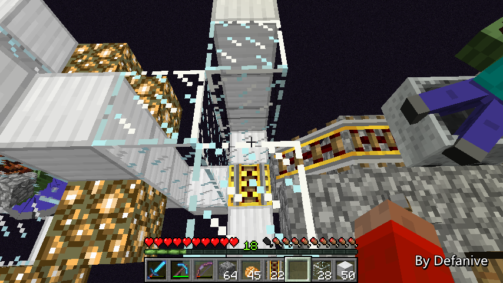

首页
上一页
244
245
246
247
248
249
249
250
251
252
253
254
下一页
末页
defanive2
无尽黑夜
14
55只了。。怎么办。。。
难道又要挂机一次么。。
——来自 MCLive
17959楼
2013-06-21 22:56
defanive2
无尽黑夜
14
不过就算坑爹也没办法。。
这批怪物还是要立即安置好的
不然下一次进END的时候这批怪物又被挤出去了
PS 估计是刚刚运输的时候怪物进入了未加载的chunk
然后chunk被加载时就挤出去了。。
杯具。。。
——来自 MCLive
17960楼
2013-06-21 22:58
defanive2
无尽黑夜
14
怪物站还是得建的
我们来开工吧
——来自 MCLive
17962楼
2013-06-21 23:00
defanive2
无尽黑夜
14
怪物站的最大问题就是在于如何保证怪物不会挤出去
解决方法就是，使用矿车
让每一个怪物都坐到矿车里面，就可以保证不被挤出去了
其他方法如水流集中等也可以
不过鉴于美观需要，就是用矿车法吧
反正铁也用不完
PS 80只怪物需要400个铁，大概是45个铁块左右
如果有刷铁机的话这点消耗是可以接受的
——来自 MCLive
17967楼
2013-06-21 23:04
defanive2
无尽黑夜
14
怪物站只是美观需要
个人设计为，上下两个端点由金块构成
然后垂直交叉由2个铁块组成的环
中间再是一环萤石
个人感觉还是挺漂亮的
不过轨道还在，暂时还看不出效果
——来自 MCLive
17969楼
2013-06-21 23:08
defanive2
无尽黑夜
14
然后就需要做出这样一个结构进行运输怪物
这样才能保证带怪物的矿车可以堆叠
——来自 MCLive
17970楼
2013-06-21 23:08
defanive2
无尽黑夜
14
在这里放下矿车，就会取出一个怪物
并被加速到怪物站中
——来自 MCLive
17971楼
2013-06-21 23:10
defanive2
无尽黑夜
14
一只怪物入站的效果
接下来把剩下的55只怪物都运进去就好了
——来自 MCLive
17972楼
2013-06-21 23:10
defanive2
无尽黑夜
14
一堆怪物已入站
——来自 MCLive
17975楼
2013-06-21 23:11
defanive2
无尽黑夜
14
矿车居然开始不堆叠了！
这个是我没有预料到的
看起来相互碰撞的强度还是太高了
——来自 MCLive
17976楼
2013-06-21 23:14
defanive2
无尽黑夜
14
里面正好装了50只怪物
看起来得必须换成2个怪物站了
——来自 MCLive
17977楼
2013-06-21 23:15
defanive2
无尽黑夜
14
一个怪物站的样子，非常漂亮
接下来还要再造一个
不过金块没有带够
打算先把这个上面的金块拆了用
下次装更多怪物的时候再补上
——来自 MCLive
17979楼
2013-06-21 23:18
defanive2
无尽黑夜
14
简单的在旁边又做好一个怪物站
可以开始装怪了
——来自 MCLive

17981楼
2013-06-21 23:22
defanive2
无尽黑夜
14
现在看，已经装了64只怪物了
——来自 MCLive
17982楼
2013-06-21 23:23
defanive2
无尽黑夜
14
但是回头一看怎么又有23只怪物。。？
好吧我SB了，其实刚刚只有32只怪物
64个entity，其中32个怪物，32个矿车
也就是说一个怪物站只能装25只怪物
这么算下来的话，80只怪物似乎要4个怪物站才能装完
看起来计划又变大了
——来自 MCLive
17983楼
2013-06-21 23:25
defanive2
无尽黑夜
14
不过似乎可以通过2个矿车一起下去的办法把怪物撞下去
这样一个怪物站也可以容纳超过25只怪物了
全部的55只僵尸都入站了
——来自 MCLive
17984楼
2013-06-21 23:33
defanive2
无尽黑夜
14
任务完成，不过还得再刷25只僵尸
不管怎么说，也算一次不小的胜利
至少发现了运输的问题，可以进行改进
——来自 MCLive
17986楼
2013-06-21 23:35
defanive2
无尽黑夜
14
要避免僵尸在运输时进入未加载的chunk
只需限制僵尸前行即可
视觉距离是9个chunk，安全点我们取6个
那么6*16/9=10.6
也就是说我们每10条水路就设置一下这样的间隔
那么就可以保证怪物运输时都在可视的chunk范围内了
——来自 MCLive
17989楼
2013-06-21 23:38
defanive2
无尽黑夜
14
回到家，算是半成功半失败
有些工程细节还是没有考虑到
不过不管怎么说，做了一次就有经验了
——来自 MCLive
17992楼
2013-06-21 23:41
defanive2
无尽黑夜
14
接下来到外面看看刷小黑的情况
必须要先靠近岛的另一边才会有效果
而且只有55只僵尸，自然小黑仍然是会刷的
不过数量应该会减少很多
——来自 MCLive
17993楼
2013-06-21 23:42
defanive2
无尽黑夜
14
到了岛这边刷小黑数量就急剧减少了
下一次再把25只僵尸运过来就完成任务了！
——来自 MCLive
17996楼
2013-06-21 23:44
defanive2
无尽黑夜
14
今天直播就到这里了！
下次再继续这个大工程！
——来自 MCLive
18003楼
2013-06-21 23:49
defanive2
无尽黑夜
14
UHC第三季第三集也发布了！
各队前期准备基本已经完毕，已经开始进入PvP准备的节奏了
http://tieba.baidu.com/p/2395458013
18021楼
2013-06-22 16:08
defanive2
无尽黑夜
14
UHC第三季第四集也发布了！
这集非常的激烈，比赛已经正式进入了PvP的节奏了
http://tieba.baidu.com/p/2395458013
18070楼
2013-06-23 22:39
defanive2
无尽黑夜
14
UHC 第三季第五集也发布了
欢迎继续跟踪战事！
http://tieba.baidu.com/p/2395458013
18107楼
2013-06-26 17:59
defanive2
无尽黑夜
14
UHC 第三季第六集 也发布了！
这是第三季的最后一集，绿队与蓝队最终相遇决战
http://tieba.baidu.com/p/2395458013
18194楼
2013-06-28 17:05
defanive2
无尽黑夜
14
与大家好久不见了，今天继续来做直播！
虽然现在不是很好的直播时间，大家也都差不多睡了
不过往后可能直播机会会少一点
所以趁现在有时间，赶快再直播一会吧
——来自 MCLive
18227楼
2013-06-30 23:41
defanive2
无尽黑夜
14
上一次在END的一个怪物站中成功装入了55只怪物
接下来还剩25只，就可以完成这个怪物站了
挂机刷了一会南瓜之后，现在可以开始刷僵尸了
——来自 MCLive
18228楼
2013-06-30 23:49
defanive2
无尽黑夜
14
又到了挂机刷僵尸的时间
顺便我跟大家聊一下最近的一些事情吧
先从UHC第三季开始
——来自 MCLive
18229楼
2013-06-30 23:51
defanive2
无尽黑夜
14
把水电梯给移除之后，僵尸又开始欲火焚身了
如果还没看UHC第三季的话，下面可能有剧透内容
如果不想被剧透的话，建议先看完视频再看直播
UHC第三季给我的总体感觉就是非常激烈和精彩
我们来做个一集一集的回顾吧
——来自 MCLive
18230楼
2013-06-30 23:58
首页
上一页
244
245
246
247
248
249
249
250
251
252
253
254
下一页
末页